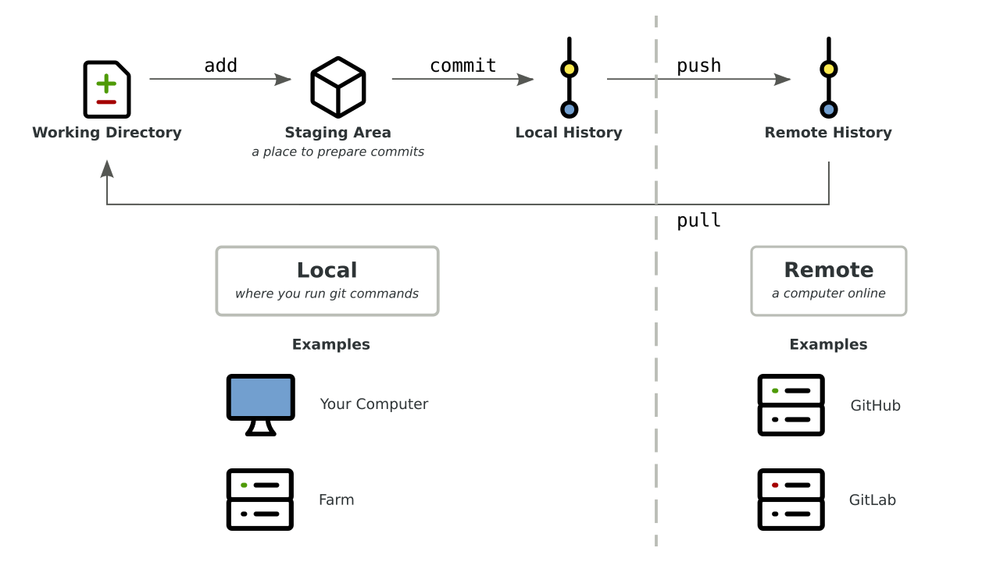

8 Keeping Track of Your Files with Version Control
This two hour workshop will show attendees how to use the git version control system to track changes to files, back up files to GitHub, and sync files between your laptop/desktop and a remote server. We will also discuss ways to collaborate with a team.
This lesson was adapted from several UC Davis sources:
- Shannon Joslin’s lesson from GGG 298
- DataLab’s workshops on git and git for teams
- Nick Ulle’s lesson from STA 141B
8.1 Learning Objectives
By the end of this lesson, students will be able to:
- setup git repositories (on GitHub or a local machine)
- add and track changes to files with
git add - save changes by committing them with
git commit - undo changes with
git revertandgit restore - resolve merge conflicts
8.2 What is git?
git is a version control system. A version control system tracks the changes you make to files, so that you can go back to a previous version at any time. It’s like Microsoft Word’s change tracking on steroids. Besides version control, git can also be used for collaborating with others.
git works in terms of repositories and commits. A repository is a directory (including its subdirectories) that’s managed by git. A commit is a checkpoint or savepoint for the files in a repository. git keeps track of every commit you make, so you can go back to older commits whenever you want.
This diagram shows the overall workflow for git:

All git commands begin with git followed by the name of a subcommand. The
arrows on the diagram represent several of the subcommands we’ll learn about in
this workshop, and we’ll revisit the diagram after learning a few.
In git jargon, the local computer is the computer where you’re running
git commands. The local computer will usually be your laptop or desktop, but
for this workshop, the local computer will be Farm. A remote computer (or
just “remote”) is any other computer online. The remote computer will usually
be a server like GitHub, which we’ll learn more about in the next section.
git takes practice to learn, like anything else. This lesson will teach you everything you need to know to get started with using git to track changes to your own files. Collaborating with others is harder, and this workshop will only cover the basics. Keep an eye out for future DataLab workshops to learn more :)
8.3 What is GitHub?
We’re going to introduce you to git through GitHub, a website used to store, share, and collaborate on git repositories. You don’t have to use GitHub or its competitors (such as GitLab and BitBucket) in order to use git, but doing so provides a convenient way to:
- back up your repo
- look at your changesets
- share your software with others (including both future you and your lab/advisor)
8.3.1 Create a GitHub Account
Please go to GitHub and create a free account. You’ll need to choose a username (this is public, and kind of like a social media handle, so choose wisely :) and a password (something you can remember and type!).
As of writing this, GitHub’s free accounts allow unlimited private repositories with up to three collaborators, and unlimited public repositories. You can apply for an academic account or upgrade your account if you want more collaborators on private repositories.
8.3.2 Create a New Repository
Let’s use GitHub to create a new repository. The steps are:
- Navigate to GitHub.
- Click on the plus sign in the upper right of the screen.
- Select “New repository” from the drop-down menu.
- On the “Create a new repository” page, choose a name for your repository.
For this workshop, name the repository
2021-my-first-repo. A repository can have any valid directory name, but putting the year at the beginning is a good practice because it makes it clear when the repo was created. - Check the box “Add a README file”.
- Click the green “Create repository” button at the bottom of the page.
Here’s a screenshot of the “Create new repository” page:
After a few seconds, you should be redirected to a web page with a URL like
https://github.com/USERNAME/2021-my-first-repo, where USERNAME is replaced
by your GitHub username. This is your new repository’s URL.
Unless you selected “Private” on the “Create a new repository” page, your new repository is public. That means anyone can see and copy files you put in the repository (but only you and people you grant permission to can edit the repository).
8.4 Using git
8.4.1 Set up git on Farm
Now, log in to Farm, or start up a Binder and go to the terminal.
The git config command changes git’s configuration. The first time you use
git on a computer (such as Farm), it’s a good idea to configure git with your
name and email address. Make sure to use the same email address you used to
sign up for GitHub, so that GitHub will recognize your work.
The commands to set your name and email address are:
git config --global user.name "Your Name"
git config --global user.email you@example.comIf you decide to use git on your laptop or desktop, or get a new Farm account after this workshop, you’ll need to run these commands again.
8.4.2 Optional: Set up a Password Helper
You’ll have to type in your password each time you want to make changes, unless you do this:
git config --global credential.helper 'cache --timeout=7200'By default git will cache your password for 15 minutes. Here, the timeout parameter increases this to two hours.
8.4.3 Clone the Repository
In order to work with your new repository, you first need to download it to
Farm. The git clone command downloads a repository from a remote server for
the first time.
Go to the GitHub repository you created, click the green “Code” button in the top right corner, and copy the HTTPS URL shown.
Then change to your home directory on Farm (cd ~), type git clone, and
paste the URL you copied. The command should look like this:
git clone https://github.com/USERNAME/2021-my-first-repoPress enter to run the command. This will create a directory
2021-my-first-repo in your home directory.
Change into the new directory and take a look around:
cd 2021-my-first-repo
ls -aYou’ll notice two files:
- A hidden
.gitsubdirectory, which git uses to keep track of changes you make to the repo - A
README.mdfile, which GitHub created when you checked the “Add a README file” box. This file is also displayed on the GitHub page for your repository.
8.4.4 Edit a File
Let’s edit the README.md file. You can use nano on Farm or RStudio on
binder:
nano README.mdAdd a new line like Hello, git!, then save the file and exit.
Now let’s see if git recognizes the changes. The git status command checks
the status of a git repo. In the terminal, enter:
git statusYou should see the following message:
On branch main
Your branch is up to date with 'origin/main'.
Changes not staged for commit:
(use "git add <file>..." to update what will be committed)
(use "git restore <file>..." to discard changes in working directory)
modified: README.md
no changes added to commit (use "git add" and/or "git commit -a")This is telling you a few things:
README.mdhas been modified. This is the most important part!- Your copy of the repository is up to date with
origin/main, which is what git calls GitHub’s copy of the repository. We’ll revisit whatorigin/mainmeans later. - Commands to add changes you plan to keep (“commit”), or to undo changes you decided don’t want to keep. You’ll learn more about these commands later.
Before you can make a commit, you have to tell git which changes you want to
include in the commit. You do this by adding changes to git’s staging area
(or index) with the git add command. You can think of the staging area as a
box you’re packing up to get ready to store.
Add your changes to README.md to the staging area by entering this command:
git add README.mdNow check the status:
git statusThe status should now say that your changes to README.md are “staged for
commit”. They are now in the staging area, but haven’t been committed yet.
Before making a commit, it’s a good habit to review the changes in the staging
area. This is especially important if you’re working with multiple files. The
git diff command shows differences between your working directory and
previous commits.
You can use git diff with the argument --staged to compare the staging area
to the most recent commit (GitHub made a commit when you created the repo). Run
this command:
git diff --stagedYou should see something like:
diff --git a/README.md b/README.md
index 8d2d4d8..0a92250 100644
--- a/README.md
+++ b/README.md
@@ -1 +1,4 @@
-# 2021-remotecompute-test
\ No newline at end of file
+# 2021-my-first-repo
+
+Hello, git!
+For each file you changed, the git diff command shows lines you added
prefixed with + (in green) and lines you removed prefixed with - (in red).
So the message above is telling you that you changed one file (README.md),
and that you changed three lines. Two are blank lines and one is the text you
added to the file. If you edited the file differently, you’ll see a different
message, but you should see the changes you made.
8.4.5 Commit a File
Now let’s commit the changes. The git commit command creates a commit. When
you create a commit, git will ask you to write a one-sentence commit
message to describe your changes. It’s a good habit to write a concise,
informative commit message to remind yourself and your collaborators of what
changed.
If you run git commit in the terminal without any other arguments, git will
open an editor (usually vi) for you to enter and save your commit message.
You can use the -m argument to enter your commit message directly into the
terminal (without opening an editor). Make sure to surround the message in
quotes.
Enter this in the terminal:
git commit -m "Added a line to README."git should reply with something like this:
[main 9bf6695] added info to README
1 file changed, 3 insertions(+), 1 deletion(-)Here 9bf6695 is the commit’s ID. Your commit will have a different ID, and
we’ll learn more about how to use the ID later.
What if you run git status now?
git statusYou should see:
On branch main
Your branch is ahead of 'origin/main' by 1 commit.
(use "git push" to publish your local commits)
nothing to commit, working tree cleanThis tells you there are no new, uncommitted changes in your repo (because you
just committed the changes). It also tells you that your repo is now out of
sync with GitHub (origin/main) by 1 commit. In other words, GitHub does not
yet have the commit you just made.
Let’s send the commit to GitHub. The command to send a commit from the local
repo to a remote repo is git push. Run the command now:
git pushgit will ask for a username and a password. Enter your GitHub username and password. You’ll see this error message:
remote: Support for password authentication was removed on August 13, 2021. Please use a personal access token instead.
fatal: unable to access 'https://github.com/s-canchi/2021-remotecompute-workshop8.git/': The requested URL returned error: 403Most remote git repos accept a username and password, but as of August 13, 2021, GitHub does not.
8.4.5.1 Set up a Personal Access Token
Github disabled passwords in favor of personal access tokens (PAT) and SSH keys. Follow these steps on GitHub to generate a PAT:
- Navigate to GitHub
- Click on your user icon in the top right corner
- Select “Settings” from the drop-down menu
- On the left panel of the page that opens, click on “Developer settings”
- On the left panel of the page that opens, click on “Personal access tokens”
- Click the “Generate new token” button.
- On the “New personal access token” page, give your token a name in the “Note” field to help you remember when and why you created the token.
- Check the “repo” scope so the token can push to repos.
- Click the green “Generate token” button at the bottom of the page.
- On the “Personal access tokens” page, copy the new token (in the green box). The token will no longer be viewable once you navigate away from this page.
Save the token somewhere safe (for example, a password manager). If you want to learn more about GitHub’s PAT authentication, read our detailed tutorial.
Now let’s try pushing the commit again. Run this command in the terminal:
git pushWhen prompted, enter your GitHub username and the PAT token as your password. Pushing commits to a remote repository can take a moment. If the command finishes running successfully, you should see something like this:
To https://github.com/s-canchi/2021-my-first-repo.git
ad7e8de..9bf6695 main -> mainThis tells you that git pushed all of your commits up to and including commit
9bf6695 to your GitHub repo.
Now if you go to the GitHub page for your repo, you should see your changes to
the README.md file.
8.4.6 View the Repository History on GitHub
On the GitHub page for your repo, click on the “2 commits” link on the right side of the blue box.
You’ll see two commit messages: one “initial commit” from when you created the repository, and one with the commit message you just wrote. They’ll be ordered from most to least recent.
Click on the commit message you just wrote. You’ll see a colored diff that
shows what you changed. If you click on the ... in the right corner, you can
view the version of the file that was saved in this commit. This is one way to
view old versions of files in your repository (you can do this for any commit).
8.5 Challenge Question 1
For this challenge:
- Go back to the terminal on Farm.
- Make some more changes to the
README.mdfile. - Use
git addto add your changes. - Inspect your changes with
git statusandgit diff. - Once you’re happy with your changes, commit them with
git commit. - Verify the changes were committed with
git statusandgit diff. - Push your commit to GitHub with
git push. - Open the GitHub page for your repo and verify that the changes have been
made. Take a look at the
difffor the change.
Voila!
8.6 Revisiting the Workflow
Let’s revisit the git workflow diagram from earlier:
A typical git workflow is:
- Clone a repo from a server (like GitHub) with
git clone. This downloads from remote to local. - Make some changes to your local copy of the repo.
- Stage your changes with
git add. - Commit your changes to the repo’s history with
git commit. - Push the changes on your computer back to the server with
git push. This uploads from local to remote. - Repeat 2-5 as many times as you like until finished.
There are lots of steps in this process, so there are lots of places where it can go wrong. Pay attention to error messages and search online if you get stuck. Lots of people use git, and your question has probably been asked and answered :)
Which files should you add to git? In general, add text, scripts, metadata to git, but not the results produced by the scripts. If your repository follows best practices for reproducibility, it should be possible to regenerate the results anytime they’re needed. Of course, it’s okay to keep uncommitted result files in your local repo as you work. Also avoid committing any large data files (> 1 MB), as these will slow down git (and GitHub has limits on total storage for free users).
How often should you make commits? This varies from person to person and team to team. If you have collaborators that already use git, ask them about their workflow. Otherwise, it’s good practice to make a commit every time you complete a small task (a natural checkpoint in your work) or decide to stop working for the day.
The remainder of this workshop is about how to undo changes (including commits) and the bare minimum you need to know use git collaboratively.
8.7 Undoing Changes
Confusingly, git has four different subcommands for undoing things:
restorerevertresetcheckout
The two you’re most likely to use in day to day work are git restore and git revert. We’ll cover those two in detail, and briefly touch on how they relate
to the other two.
8.7.1 Restoring a File
The git restore command is useful if you want to undo changes you haven’t
committed yet.
Open up the README.md file in a text editor (such as nano) and make some
changes. For instance, let’s add the line This is a mistake to the end of the
file. Then save and close the file.
Next, check the repository status:
git statusAs expected, git tells us there are changes to the README.md file:
On branch main
Changes not staged for commit:
(use "git add <file>..." to update what will be committed)
(use "git restore <file>..." to discard changes in working directory)
modified: README.md
no changes added to commit (use "git add" and/or "git commit -a")What if now you decide the changes were a mistake and you don’t want to keep
them? The git restore command restores a file in the working directory to the
version of the file in the most recent commit.
Let’s try out restoring the README.md file:
git restore README.mdNow check the status again:
git statusThe status shows that there are no longer any new changes to the README.md
file:
On branch main
nothing to commit, working tree cleanThere is no way to undo git restore, so be careful when you’re using it.
In older versions of git, the command to restore a file in the working
directory was git checkout -- FILENAME. You may occasionally see people
mention this command online, and it still works in recent versions of git.
However, the git restore command is preferable because it disambiguates what
you’re trying to do (git checkout is also used for other things unrelated to
restoring files).
8.7.1.1 Restoring the Staging Area
With a different set of arguments, you can also use the git restore command
to remove changes from the staging area.
Open up the README.md file in a text editor again and make some more
changes. This time let’s add the line Git is tough to the end of the
file. As usual, save and close the file.
Next, add the changes to the staging area:
git add README.mdOpen the file in a text editor one more time, and add the line This is a great sentence to the end of the file. Save and close the file.
Then check the repository status with git status:
Changes to be committed:
(use "git restore --staged <file>..." to unstage)
modified: README.md
Changes not staged for commit:
(use "git add <file>..." to update what will be committed)
(use "git restore <file>..." to discard changes in working directory)
modified: README.mdgit tells us that some of the changes to README.md are staged (from when we
ran git add earlier) and some of them aren’t.
Now suppose you decide you want to unstage the changes to README.md. This
removes the changes from the staging area, but not from the working directory.
Unstaging changes is especially useful when you’re working with multiple files
and accidentally add a file you don’t want to commit yet.
To unstage a file, use git restore with the --staged argument:
git restore --staged README.mdThen check the status again:
On branch main
Changes not staged for commit:
(use "git add <file>..." to update what will be committed)
(use "git restore <file>..." to discard changes in working directory)
modified: README.md
no changes added to commit (use "git add" and/or "git commit -a")The changes to README.md are still in the working directory, but no longer in
the staging area.
In older versions of git, the command to restore a file in the staging area was
git reset FILENAME. You may occasionally see people mention this command
online, and it still works in recent versions of git. However, the git restore command is preferable because it disambiguates what you’re trying to
do (git reset is also used for other things unrelated to restoring the
staging area).
8.7.2 Reverting a Commit
The git revert command is useful if you want to undo changes that you’ve
already committed. Once a commit is in your repository’s history, it generally
stays there forever. There is a way to delete commits, but you should really
only delete commits if you accidentally commit sensitive data).
Instead, the idiomatic way to undo a commit is to create a new commit that
reverses the changes.
Let’s start by editing the README.md file again and making a commit. Add the
line This is a big mistake. to the end of the file. Then run:
git add README.md
git commit -m "This commit is a mistake."Now suppose you decide the commit is a mistake, and want to undo it. First, you
need to find the ID of the commit you want to undo. The git log command opens
a scrolling list of all commits in the repository’s history and their IDs. Run
the command:
git logYou can exit the log by typing q.
In the log, locate the the mistaken commit, and copy or remember the first 5 digits of its ID. git is smart enough that it can generally recognize a commit from the first few digits of its ID, and will tell you if it needs more digits for disambiguation.
In my repo, the ID of the commit starts with e01d1. In your repo, the commit
will likely have a different ID. Next, run this command, replacing the ID with
the ID you copied:
git revert e01d1 --no-editThe --no-edit flag tells git revert to generate the commit message for the
new commit automatically. Without the flag, git revert will prompt you to
enter a commit message.
Now inspect the file with nano or cat. You should see that the changes from
your bad commit are gone. If you look in the log with git log, you’ll also
see a new commit to revert the changes of a previous commit.
8.8 Challenge Question 2
The goal of this challenge is to make a bad commit and then revert it. Work through these steps:
- Change a file in your repository.
addandcommitthe changes.- Find the ID of the commit from step 2 in the repository history.
revertthe commit from step 2.
8.9 Working Collaboratively
8.9.1 Editing on GitHub
You can edit on GitHub directly! This is a great way to fix little typos and use a friendly editor, but it’s a bit clunky for day to day work.
To edit a file on GitHub via the Web:
- Go to your file on GitHub.
- Click the little edit button.
- Add some text.
- Commit changes.
Yay, the changes are now in the history!
Unfortunately, the changes aren’t in your local repository yet. You can download the changes by running:
git pullEt voila!
Hopefully this will be easy to remember: push sends commits from your local
repo to a remote, and pull retrieves commits from a remote to your local
repo.
The git pull command can also retrieve commits made by someone else (such as
a collaborator) as long as the commits are in the repository on GitHub.
8.9.2 Merge Conflicts
When you work on a GitHub repository with other people, they might change a
file, commit the changes, and then push their commit to GitHub. Your local
copy of the file won’t change unless you pull the new commit from GitHub. In
other words, your local repository can easily get out of sync with the remote
repository on GitHub. If you then change your local copy of the file and commit
the changes, you create a conflict. If you try to push the conflicting commit
to GitHub, you’ll see an error message:
git push
To github.com:USERNAME/REPOSITORY.git
! [rejected] main -> main (fetch first)
error: failed to push some refs to 'git@github.com:USERNAME/REPOSITORY.git'
hint: Updates were rejected because the remote contains work that you do
hint: not have locally. This is usually caused by another repository pushing
hint: to the same ref. You may want to first integrate the remote changes
hint: (e.g., 'git pull ...') before pushing again.
hint: See the 'Note about fast-forwards' in 'git push --help' for details.When you see an error, don’t panic! The error message hints that you should try pulling commits from GitHub before pushing your commit. If you pull commits from GitHub, you might see another error message:
git pull
remote: Counting objects: 3, done.
remote: Total 3 (delta 0), reused 0 (delta 0), pack-reused 0
Unpacking objects: 100% (3/3), done.
From github.com:USERNAME/REPOSITORY
6fe289c..48e44d3 main -> origin/main
Auto-merging README.md
CONFLICT (content): Merge conflict in README.md
Automatic merge failed; fix conflicts and then commit the result.This is okay! Git tried to automatically fix the conflict by merging your
commit with the other person’s commit, but couldn’t figure out how because both
commits changed the same file (README.md in the example). An automatic merge
will only succeed if the commits being merged changed different files.
Otherwise, it’s up to you to resolve the conflict manually. If you open the
file causing the conflict in a text editor, you’ll see something like this:
# Our README.md
<<<<<<< HEAD
Here are the changes you made.
=======
Here are the changes the other person made.
>>>>>>> 48e44d3a60af614f3a0da794a1701d040221d40f
Here's some text that was added to the file in an earlier commit.Git automatically marked which parts of the file conflict. Changes from your
commit are shown between <<<<<<< and =======. Changes from the other
person’s commit are shown between ======= and >>>>>>>. All you need to do
is edit the file to look the way you want. If you wanted to keep your changes
and the other person’s changes (the polite thing to do), you could edit the
file to look like this:
# Our README.md
Here are the changes you made.
Here are the changes the other person made.
Here's some text that was added to the file in an earlier commit.When you’re done editing, save and then commit the file. This is called a merge commit. Git will automatically provide a commit message indicating that you merged your commit with the other person’s commit:
[main 9594c15] Merge branch main of github.com:USERNAME/REPOSITORYFinally, you can push your commit along with the merge commit to GitHub:
git push
Counting objects: 6, done.
Delta compression using up to 4 threads.
Compressing objects: 100% (2/2), done.
Writing objects: 100% (6/6), 602 bytes | 0 bytes/s, done.
Total 6 (delta 0), reused 0 (delta 0)
To github.com:USERNAME/REPOSITORY.git
48e44d3..9594c15 main -> mainNote that if you pull and git asks you to merge a file, but you’d like to undo
the pull and make more changes before merging, you can use the command git merge --abort. Git will remind you about “unmerged paths” in the git status
message when it’s waiting for you to merge a file:
git status
On branch main
Your branch and 'origin/main' have diverged,
and have 1 and 1 different commits each, respectively.
(use "git pull" to merge the remote branch into yours)
You have unmerged paths.
(fix conflicts and run "git commit")
(use "git merge --abort" to abort the merge)
Unmerged paths:
(use "git add <file>..." to mark resolution)
both modified: README.md
no changes added to commit (use "git add" and/or "git commit -a")You can generally avoid merge conflicts by communicating with your collaborators, but it’s useful to know how to resolve them when they happen.
8.10 Challenge Question 3
For this final challenge question, you’re going to create and then fix a merge conflict. Here are the steps to work through:
- Edit the
README.mdfile on GitHub and make a commit. Don’t pull the commit to your local repo yet. - Edit the
README.mdfile on your local repo and make a commit. - Try pushing your commit (you’ll get an error message).
- Run
git pulland resolve the merge conflict by editingREADME.md. - Run
git committo save the resolved changes. - Push the merge commit back to GitHub and check that it appears in the history there.
8.11 Odds and Ends
8.11.1 Ignoring Files with .gitignore
Sometimes a repository contains files you never want to commit. For instance, you should generally commit text, code, and other files that generate outputs, but not the actual outputs. As another example, you generally shouldn’t commit large data sets.
Over time, these files you never commit will start to clutter up your git status output. You can tell git to ignore specific files by creating a new
file called .gitignore at the top level of the repository.
The .gitignore file is a list of files to ignore, with one line per file. You
can use the * character as a wildcard.
For instance, suppose you want git to ignore all PDF files in your repository.
Open .gitignore with a text editor and add the line:
*.pdfAfter you set up your .gitignore file, add and commit it. Remember you can
always change .gitignore as time goes on by editing it and making a new
commit. It’s good practice to keep git status clean, showing only the stuff
that you’re interested in tracking.
8.11.2 Setting up a Repository without GitHub
So far you have learned a git workflow that relies on GitHub for creating new repositories. What if you have an existing directory with files that you now want to track using git?
This section will show you how to set that up.
First, make a directory for the new repository:
mkdir workshop_scripts
cd workshop_scriptsNext, initialize the directory as a git repository:
git initNow the repository is set up. You can add and commit files as usual.
8.11.2.1 Pushing to GitHub
If you later decide you want to use the repository with GitHub, here’s how to do it.
First, set up a remote for the repository on GitHub. Follow the steps in the Create a New Repository section of this reader, but leave the box to “Add a README file” unchecked. You can name the new repository anything you want, but it’s idiomatic to use the same name as the directory that contains the repository.
Next, use the git remote command to tell git to use the new GitHub
repository as a remote:
git remote add origin https://github.com/USERNAME/workshop_scripts.gitNow your repository is aware of the remote on GitHub. The first time you push commits, you’ll also have to link your local repository’s main branch to the remote repository’s main branch:
git push --set-upstream origin main8.12 Additional Resources
- Check out Daniel Standage’s blog post on using github to collaborate with yourself for inspiration!
- Handy git cheatsheet from GitHub
- Mark Lodato’s visual reference on git
- Roger Dudler’s simple guide to git
- Git-it which provides step by step tutorial with challenge exercises